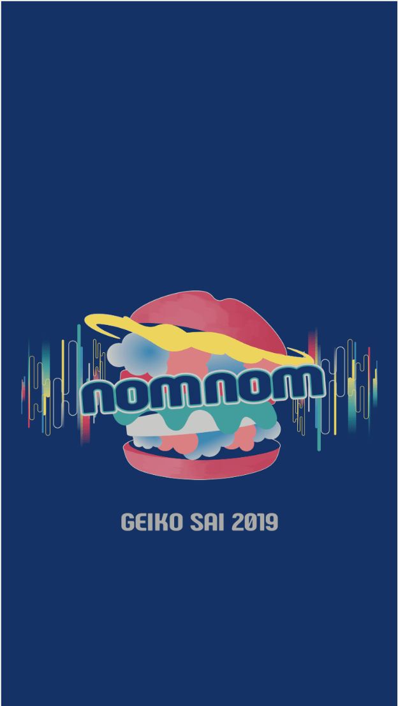
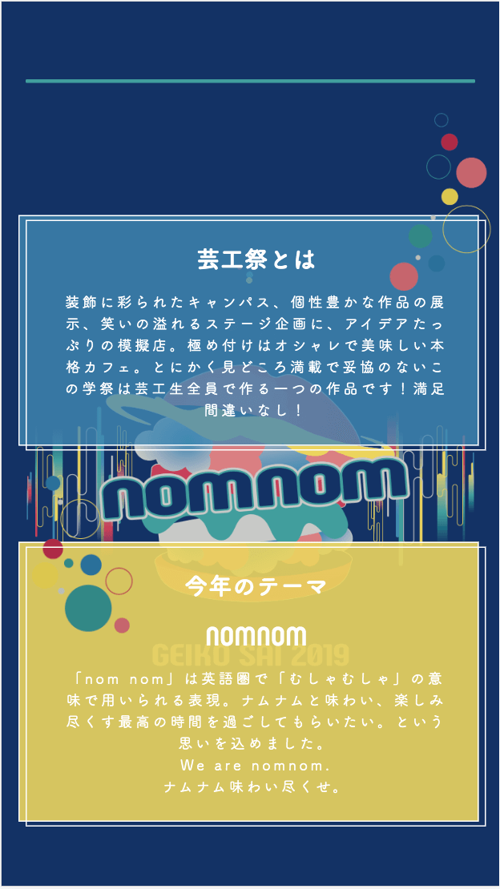
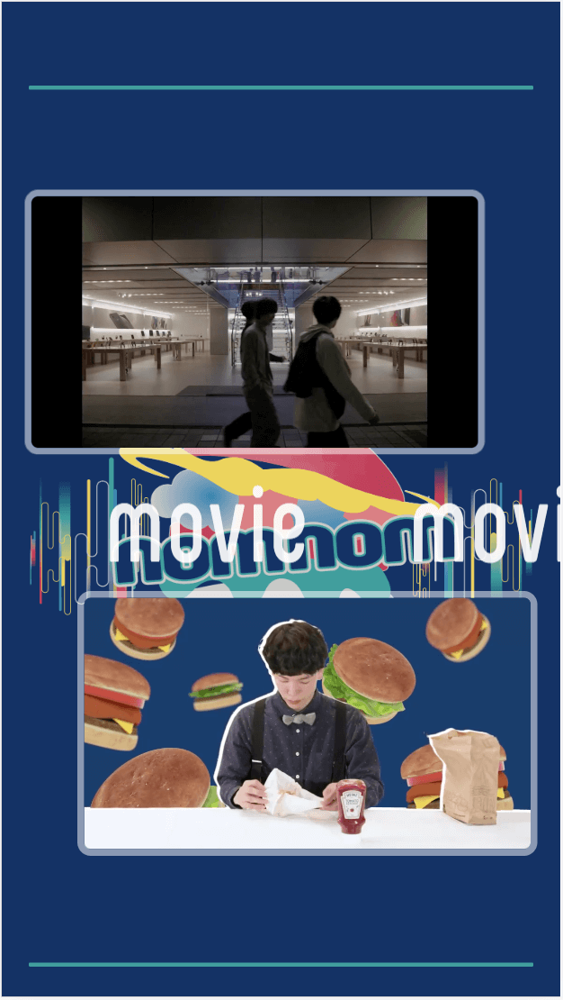
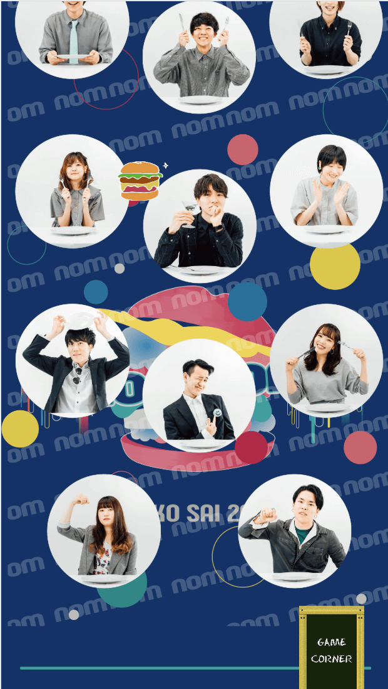

概要
私の通う学校名古屋市立大学芸術工学部の学祭「芸工祭」の学内に向けた告知サイトです。
芸工祭は１〜３年生がそれぞれ部署に所属し生徒主体で開催されます。
芸工祭の広報部署長として、後輩特に１年生に芸工祭とは何かを伝えるサイトです。
期間
2019年6月11日〜6月25日 (14日間)
使用ツール
illustrator
html
css
jQuery
作品紹介
   
テーマ
今年の芸工祭のテーマはnomnomです。
ご飯を食べる擬音語もぐもぐの英語で、芸工祭を味わい尽くせ！という意味が込められています。
また、m組情報環境デザイン学科,n組産業イノベーション学科,o組建築デザイン学科の３学科で成り立つ芸術工学部のクラス名m,n,oが入っているところも見所です。
工夫点
テーマを伝える
今年のテーマを伝えるためにメインビジュアルはテーマ以外の情報を入れないデザインにしています。
また、コンセプトムービーを埋め込むことによりさらに芸工祭のイメージを持ってもらう、今年の幹部はどんな人がいるかを伝えるデザインにしています。
ワクワクするサイト
私は広報web部署長として、後輩にweb部署入ってもらいサイト製作やゲーム製作の楽しさを知って欲しかったです。
そのため、まずこのプレサイトを見てwebってこんなことができるんだ！なんか楽しそう、凄そう、やってみたい！と思ってもらうためにアニメーションをふんだんに使ったデザインにしました。
特に映像を埋め込んだ部分はコンセプトムービーの良さが引き立つデザインになったと思います。
隠しギミックとして適部署チャートとゲームに飛ぶ導線があることも見所です。